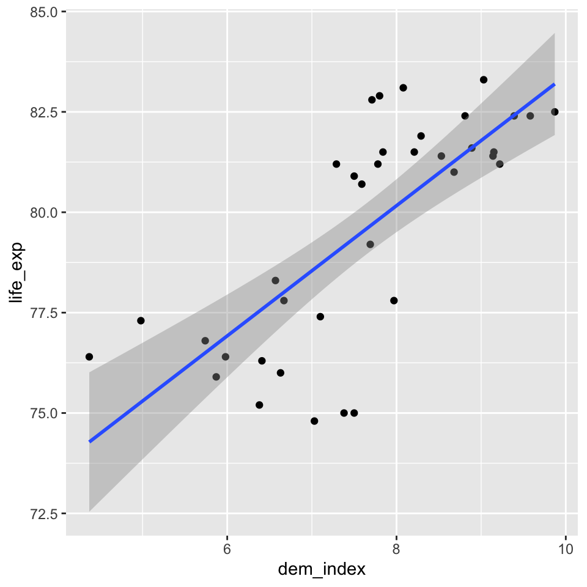

Simple linear regression
In this lecture, we will introduce basic building blocks for regression analysis (something like regression blue print or basic plan) and we will try building and interpreting simple linear regression in R.
The first part of the simple (i.e., bivariate, i.e. one predictor and one outcome variable) regression model a line, which has the following formula:
\[ Y = \alpha + \beta*X \]
It can also be generalized as follows:
\[ Y = \beta_0 + \beta_1*X \]
\(\alpha\) or \(\beta_0\) in the generalized version is the intercept, i.e. the value of Y (dependent variable) when X (independent variable) = 0.
\(\beta\) or \(\beta_1\) in the generalized version is the slope, i.e. rate of change in Y when X changes by 1 unit.
The line represent an expectation for the value of Y, given the value of X (conditional expectation). Notice, we usually use capital X to refer to a random variable, and a lowercase x to refer to its value.
The idea of conditional expectation is quite illuminating: We can think of regression as conditional mean. Consider this: When we do not know the value of variable X, our expectation of a random observation of the variable Y is simply its mean, i.s. \(E(Y) = \bar{Y}\). When we do know the value of X, we change our expectation of Y based on the regression line: $E(Y) = _0 + _1*X.
However, the line is not all there is to the simple linear regression. As on the figure below, the actual observations usually do not fall exactly on the line (they deviate from the expectation). The difference between the blue regression line and each actual observation is called the error term or residual (more about the difference between the two below) and is shown as red line the figure.

Image source: http://www.sthda.com/english/articles/40-regression-analysis/167-simple-linear-regression-in-r/
Hence the full simple regression formula has the following form where \(\epsilon_i\) represents the error term for the i-th observation. Notice we switched from capitol X and Y to lowercase x and y with a subscript to highlight that they now represent specific values.
\[ y_i = \alpha + \beta*x_i + \epsilon_i \]
Now for the distinction between “error term” and “residual.” In line with the convention, we use “error term” to refer to the (theoretical) difference between the real value of Y and the real average value of Y for given X. We use “residual” for the difference between our observed value of Y (which can be distorted by measurement error) and our regression model (the model can deviate from the real relationship due to sampling error). This means that error term is a theoretical concept while a residual is the value available in our data when we do statistical modeling.
The idea of the error terms says: even in theory, we expect the linear relationship of interest between two variables to be just a model, just a simplification of the reality. We do not expect it to describe the reality precisely.
The reason why we distinguish the term “residual” is to make clear that we acknowledge that the regression model we compute in our software on our sample is just an estimate of the real relationship. And residuals are deviations from this estimate, not from the real relationship.
In other words, errors are the deviations of the theoretical (i.e. measured without measurement error) observations from the real population conditional mean (from the theoretical regression line). Residuals are the deviations of the actual observations we have from the conditional mean computed on our sample (i.e., from the regression line we actually computed).
As this distinction is theoretical, we often see the terms used interchangeably in practice. This is fine as long as you conceptually understand the difference.
Ordinary least square
The algorithm used to estimate the regression line works so as to minimize the sum of squares of residuals (Residual Sum of Squares, RSS). Hence linear regression is sometimes also referred to as ordinary least square regression or just OLS. For details on how OLS is calculated, see Fox (2015, p. 83).
\[ \small Residual\:sum\:of\:squares=-2^2+1.1^2+2.8^2+(-4)^2+1.6^2+1.8^2+(-0.3^2)+(-0.2^2)+(-0.1^2)+(-0.7^2)=35.3 \] \[ \small Sum\:of\:residuals=-2+1.1+2.8-4+1.6+1.8-0.3-0.2-0.1-0.7=0 \]
Regression and t-test
We now elaborate on the idea that the line in the linear regression model can be perceived as conditional mean by showing that a t-test is simply a special case of regression. Yes, simple linear regression with one binary predictor is equivalent to the t-test. The regression coefficient of one binary predictor coded as 0 and 1 represents the difference of means of the two groups.

Centering predictors for better interpretation
Sometimes, we center the independent variables. The only reason for centering in OLS is for interpretation purposes. But this can be a very good reason.
There are two commonly used types of centering in the context of OLS. Most frequent is centering by subtracting the mean. This results in intercept interpreted as the values of Y when predictor X is set to its mean. Alternatively, we can use conventional centering point such such as 100 for IQ. (In this case, the intercept would be interpreted as value of Y when the IQ is 100).
Dummy variables
Linear regression assumes that both the dependent variable and the independent variable(s) are measured in a metric scale (interval or ratio). If the dependent variable is categorical (or a factor to use the language used in R), we generally need a different model (such as logistic regression) and that is something not covered in this course. If, however, one or more of the independent variables is categorical, we can still use them in linear regression after transforming them into binaries as binaries are, in a sense, metric variables.
When we have binary factors, we simply recode them as 0s and 1s and enter in the regression model. With multivariate factors, we have to transform each such factor into a set of binary dummy variables. Then we select one of them which we do not enter in the model (so called reference category) and the rest enters the model (e.g., for a factor with five distinct categories, four dummy variables will enter the model). Regression coefficients for the dummy variables than identify differences in group means compared to the one reference group.
The good news is that we don’t have to do the recoding ourselves. We can just enter a factor variable in the model and R will transform it into a set of dummies and leave one out for us. All we need to do is make sure that a categorical variable is correctly coded as factor before we enter it in the model.
Running regression in R
In this commentary, we assume you are already familiar with working in R to the extent you know how to install packages and organize your project in folders. For our example, we will need to download the countries data set: See section Materials/Datasets on this webpage.
We will also need to call on some packages and read in the downloaded data to R:
library(tidyverse) # for ggplot function
library(here) # for consistent path referencing across platforms
countries <- read.csv(here("data", "countries.csv"))Having only one predictor (independent variable) and one outcome (dependent variable), simple linear regression is easy to visualize. It is therefore a good idea to always start with such visual check of the relationship in the data. You can create and save a plot using the code below (we use a data set of selected countries, our dependent variable is the life expectancy in years and our predictor is the democracy index assembled by The Economist Intelligence Unit).
model_vis <-
countries %>%
ggplot(aes(x = dem_index, y = life_exp)) +
geom_point() +
geom_smooth(method = "lm")You can than display the plot simply by running the object model_vis created in the previous step. The shaded area around our model fit is an acknowledgment that the blue line is an uncertain estimate prone to the sampling error. More technically, we could say that based on the variation in our data, we estimate that if we conducted the sampling procedure over and over, 95% of the resulting regression lines would end up in the shaded area.
model_vis
Now that we see that there clearly is a relationship and it seems sensible to model it as linear, we can proceed to compute the model. To create a simple linear regression model in R and save it as an object which we can reference later, we can run the following code.
model_fit <- lm(life_exp ~ dem_index, data = countries) # lm function name stands for linear modelRegression output
Let’s look at what we got. First, we will run the summary function on our lm object. The output is not the most beautiful one, but we will learn how to convert it to a nice and easy-to-export table later in the course.
summary(model_fit)##
## Call:
## lm(formula = life_exp ~ dem_index, data = countries)
##
## Residuals:
## Min 1Q Median 3Q Max
## -4.3527 -0.8097 -0.0173 1.3933 3.1068
##
## Coefficients:
## Estimate Std. Error t value Pr(>|t|)
## (Intercept) 67.1916 1.8851 35.643 < 2e-16 ***
## dem_index 1.6215 0.2434 6.663 1.04e-07 ***
## ---
## Signif. codes: 0 '***' 0.001 '**' 0.01 '*' 0.05 '.' 0.1 ' ' 1
##
## Residual standard error: 1.902 on 35 degrees of freedom
## (1 observation deleted due to missingness)
## Multiple R-squared: 0.5592, Adjusted R-squared: 0.5466
## F-statistic: 44.4 on 1 and 35 DF, p-value: 1.044e-07The Call section repeats the formula. The Residuals section describes the distribution of residuals: For example, we can say that for 50% of the observations, the observed value is between -0.8097 and 1.3933 away from the expected value. The Coefficients section is what usually gets most of our attention. “Estimate” collumn gives us the line coordinates. Hence our model can be written as follows:
\[\text{life expectancy in years} = 67.19 + 1.62*\text{the democracy index}\]
This is often read as: for one point increase in the democracy index, the model expects the life expectancy to increase by 1.62 years.
The rest of the Coefficients sections is all about the uncertainty of our estimates. We will focus on the beta estimate for the democracy index, i.e., the value of 1.62. Its standard error is 0.24. This means that based on the variability in the data and the number of observations, we expect that if we conducted the sampling many times, we would get a Student’s t-distribution of beta estimates (so called sampling distribution) with standard deviation of 0.24. We can recall from introductory statistics lectures that Student’s t-distribution converges to normal distribution with growing N. With our N of 37 countries, the sample is already big enough to actually think of the sampling distribution as normal.
Combining the estimate and its standard error by dividing the first with the latter produces the t-statistic for a test of the null hypothesis that the coefficient is 0. The t-statistic corresponds to tiny p-value, virtually a 0, but we can be pedantic and say it is actually 0.000000104. This says that if the null hypothesis was true, we would expect to obtain a sample as extreme as ours or more extreme in 1 in 10 000 000 case. This is low enough probability to reject the null hypothesis.
We get some additional information at the bottom of the output. The Residual standard error is 1.902. It is (slightly adjusted) standard deviation of the residuals, so basically alternative information about the distribution of residuals.
Multiple R-squared (called the coefficient of determination) is a measure of the model fit (i.e., how well the model fits the data). It is often used, but caution is required: better model fit does not neccessarily mean better model. We will learn about some tricks that the coefficient of determination can play on us later in the course and we will also explain the difference between its raw and adjusted version. For now, it is enough to know that the number indicates the proportion of variance in the dependent variable successfully predicted by the model.
To conclude the list, there is the F-statistic. It is sometimes labelled as a global test of the model. It tests whether at least one of the predictors has a beta coefficient which is different from 0 on given level of statistical significance. In other words, it test the null hypothesis that all predictors have beta coefficients equal to 0. In our case, we only have 1 predictor, so it should not surprise us that the p-value is the same as the p-value for our democracy index coefficient, even if the test uses a different statistic.
Dissecting the lm object
The object produced by the lm function is more than its summary. It also contains all the original data as well as the expected (fitted) values, the residuals and more.
See below how you can call the values of both the dependent and independent variable, the residuals and the fitted values.
model_fit$model$life_exp # this is (can be) different from countries$life_exp as it only shows observations with no missing values for the variables entering the model
model_fit$model$dem_index
model_fit$residuals
model_fit$fitted.valuesIt can be illuminating to see how individual parts from the summary can be obtained from the \(lm\) object. For example, to get the Residuals section from the output, you can apply the generic summary function on the vector of residuals. Note that this also provides the mean, but as the mean of residuals is always 0 (it is implied by the fitting procedure of the ols regression), the mean is omitted from the output above.
summary(model_fit$residuals) # applying summary on a numerical vector## Min. 1st Qu. Median Mean 3rd Qu. Max.
## -4.35269 -0.80968 -0.01728 0.00000 1.39330 3.10680To get the Residual standard error, we could run the following code.
SSE=sum(model_fit$residuals^2) # residual sum of squares
sum(residuals(model_fit)^2) # alternative to the command above (without saving the result into an object)## [1] 126.587deviance(model_fit) # another alternative## [1] 126.587n = length(model_fit$residuals) # number of observations
k = length(model_fit$coefficients)-1 # number of predictors, we need to subtract 1 for the constant
sqrt(SSE/(n-(1+k))) # this is how Residual standard error is computed in R. Strictly speaking, the standard deviation of residuals would be sqrt(SSE/(n-1)) without the adjustment for the number of predictors.## [1] 1.901781To get the R squared, we could run the following code.
SST=sum((model_fit$model$life_exp - mean(model_fit$model$life_exp))^2) # total sum of squares
1-(SSE/SST) # we could also reference it like this, but it does not give insight into the computation: summary(model_fit)$r.squared## [1] 0.5591801The adjusted R squared adjusts for the number of predictors. We will talk later about what it means. Here, for the sake of completeness, how it is calculated:
1-(SSE/SST)*(n-1)/(n-(k+1))## [1] 0.5465852